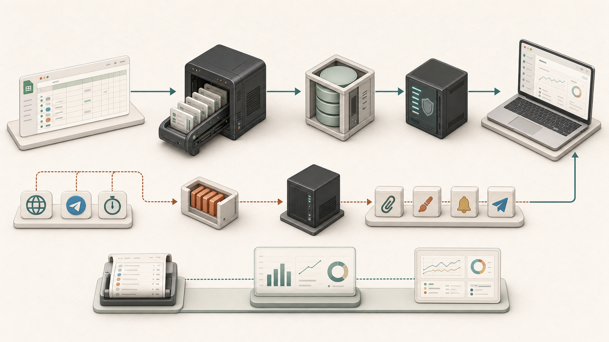
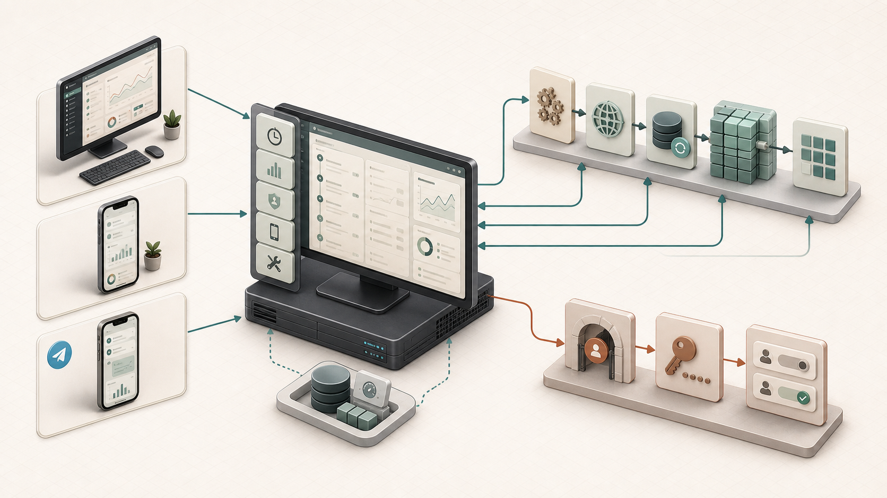
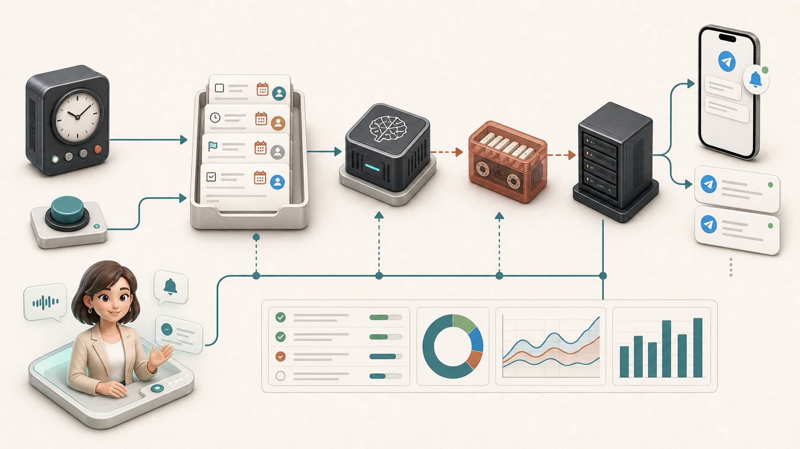

Backend
Python, модульный монолит, thin entrypoints, typed config, snapshot pipeline, access API, queue workers.
PythonYandex CloudObject StorageMessage Queue
DESIGN OPERATIONS PLATFORM
Сервис превращает рабочую таблицу с задачами в наблюдаемую систему: единый таймлайн, загрузка команды, вложения, доступы, напоминания и быстрый интерфейс для ежедневной работы.
Браузер не смог запустить встроенное видео.
Открыть HLS-поток напрямуюКороткое промо: как наш продукт помогает менеджерам.

Команда видит задачи на календарном таймлайне: дизайнеры сгруппированы слева, задачи тянутся по датам, а фильтры сверху быстро переключают срезы по бренду, формату и шоу.

Backend-часть собирает рабочую таблицу в подготовленный снимок данных для браузера. Быстрое чтение идёт по верхнему потоку: таблица → snapshot → хранилище → API → интерфейс. Действия с побочными эффектами, например вложения и напоминания, уходят в очередь и выполняются worker-ами отдельно.

Frontend-часть — это один React/Vite-интерфейс для desktop, мобильного режима, аналитики и админских сценариев. Он не пересобирает данные на лету, а читает готовый snapshot, применяет фильтры и показывает разные рабочие экраны поверх одного контракта данных.

Контур уведомлений отправляет напоминания дизайнерам о сроках сдачи задач. Планировщик берёт задачи, сроки и ответственных из подготовленного snapshot, обрабатывает его LLM и от лица виртуальной помощницы доставляет сообщение в Telegram.
АННОТАЦИЯ
В дизайн-команде задачи часто живут в таблице: там удобно быстро менять сроки, ответственных и статусы. Проблема начинается, когда по этой таблице нужно понять, что происходит прямо сейчас: кто перегружен, какие задачи горят, где есть вложения, что уже готово к показу и кому нужно напомнить о дедлайне.
DTM берёт таблицу как источник правды и собирает из неё рабочий интерфейс: таймлайн проекта, карточки задач, аналитику по загрузке, доступы для разных ролей, вложения и Telegram-уведомления. Для команды это выглядит как понятная витрина текущей работы, а внутри устроено как сервис с подготовленными снимками данных, очередями для тяжёлых действий и отдельными backend/frontend-репозиториями.
СТЕК
Python, модульный монолит, thin entrypoints, typed config, snapshot pipeline, access API, queue workers.
React/Vite SPA с desktop timeline, analytics, mobile shell, admin tools и browser contracts.
Наблюдаемость, job statuses, Telegram reminders, attachments, временные ссылки и masked/full access modes.
РЕПОЗИТОРИИ ПРОЕКТА
Рабочий интерфейс DTM: таймлайн задач, фильтры, загрузка дизайнеров и ежедневная витрина состояния дизайн-отдела.
Открыть сайт → Backend / Python yrsolo/DTMДанные, snapshot, BFF, очереди, workers, вложения, напоминания и эксплуатационный контур.
Открыть GitHub → Frontend / React yrsolo/DTM-frontТаймлайн, аналитика, мобильный режим, Telegram Mini App, admin и визуальные инструменты.
Открыть GitHub →СИСТЕМА
Таблица остаётся местом, где команда быстро меняет задачи. Backend регулярно собирает bulk-снимок, приводит данные к доменной модели и публикует подготовленные browser payloads. Frontend читает готовую модель, поэтому интерфейс быстро открывает таймлайн, аналитику и карточки задач.
Действия с побочными эффектами — вложения, рендеринг, напоминания, Telegram-ответы — проходят через явные команды и workers. Это делает систему ближе к реальной эксплуатации: пользователь видит статус, а не ждёт, пока тяжёлая операция зависнет в HTTP-запросе.